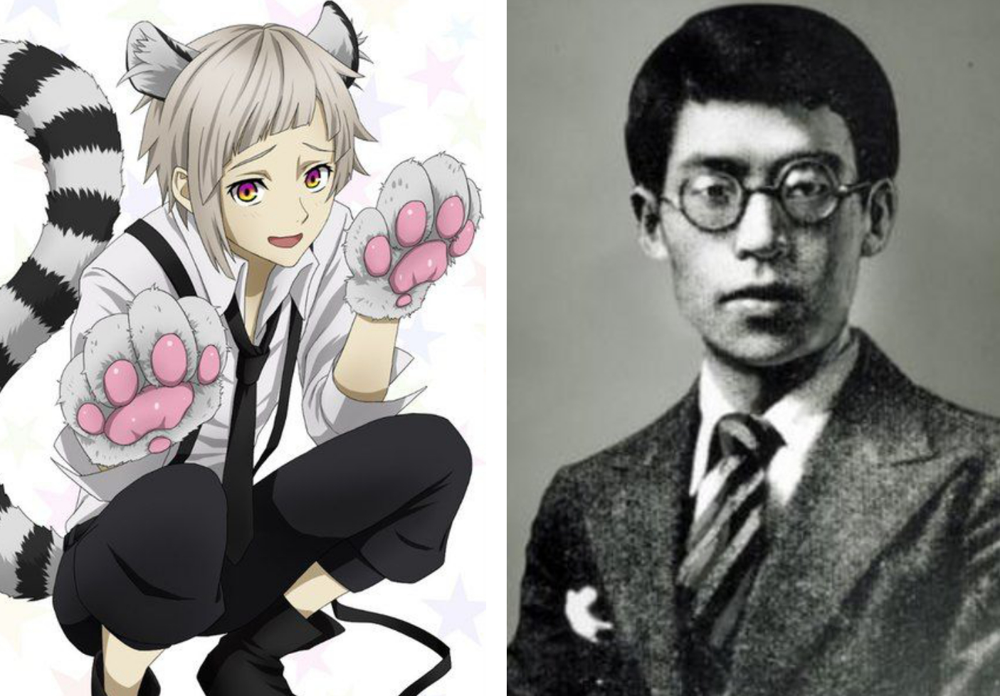

ATSUSHI NAKAJIMA

POSTAĆ-OSOBOWOŚĆ
Atsushi jest entuzjastyczny i pełen pasji, głęboko troszczy się o innych członków Zbrojnej Agencji Det
ektywistycznej oraz o dobro cywilów i ludzi w trudnych sytuacjach.
Ma bardzo niskie poczucie własnej wartości i jest nieco naiwny, co powoduje, że początkowo czuje się bezradny w obliczu niebezpiecznych sytuacji.
Ma również tendencję do silnego reagowania i wiary w rzeczy za dobrą monetę, ufając osądom innych ponad własne, a nawet porzucając własne instynkty.
Ma silne poczucie moralności, które również bezpośrednio wynika z jego wychowania. Wierzy, że jego wartość życiowa zależy od jego zdolności do ochrony innych Chociaż wciąż walczy ze swoją samooceną i słowami swojego zmarłego dyrektora, Atsushi stopniowo poprawia swoją pewność siebie i poczucie własnej wartości po dołączeniu do agencji Armed Detective. Wciąż jest wzmacniany kilkoma misjami i starciamiJego wola twardnieje w tych trudnych sytuacjach i staje się niezłomny, niezawodny i intensywnie opiekuńczy. Jednak nadal odczuwa paraliżujący strach przed walką w pojedynkę i często potrzebuje towarzysza.
Zdolność Atsushiego „BESTIA KRYJĄCA SIĘ W ŚWIETLE KSIĘŻYCA” pozwala mu przekształcić się w białego tygrysa, którego uczy się kontrolować i nakładać na różne części jego ciała. W rzeczywistości Atsushi Nakajima był japońskim autorem najbardziej znanym ze swojego opowiadania Tiger Poet , w którym człowiek przybiera postać tygrysa, przechodząc ze stanu zwierzęcego w stan ludzki, zachowując jednocześnie swoje człowieczeństwo i zdolność mówienia.
PORÓWNANIE
bjhbbhjhggkl;;lkl;k;l;lj;ljjkfkjlfdkjfdkljfkl;;lkl;k;l;lj;ljjkfkjjlfdjlfdkjfdkljfkl;;lkl;k;l;lj;ljjkfklfdkjfdkljfkl;;lkl;k;l;lj;ljjkfkjlgjhghjhdfhjnfhjkfdzhudfkuz positive. The Fandom
bjhbbhjhggjvgfgfgchghcghggvvgvhbjnbbhhjbhjvgbhhjikjlfdkjfdkljfkl;;lkl;k;l;lj;ljjkfkjlfdkjfdkljfkl;;lkl;k;l;lj;ljjkfkjjlfdjlfdkjfdkljfkl;;lkl;k;l;lj;ljjkfklfdkjfdkljfkl;;lkl;k;l;lj;ljjkfkjlgjhghjhdfhjnfhjkfdzhudfkuz positive. The Fandom
Źródła:
https://bungostraydogs.fandom.com/wiki/Port_Mafia
https://en.wikipedia.org/wiki/Atsushi_Nakajima#/media/File:AtsushiNakajima.jpg
https://www.goodreads.com/book/show/9811918-the-moon-over-the-mountain
{kind=link}